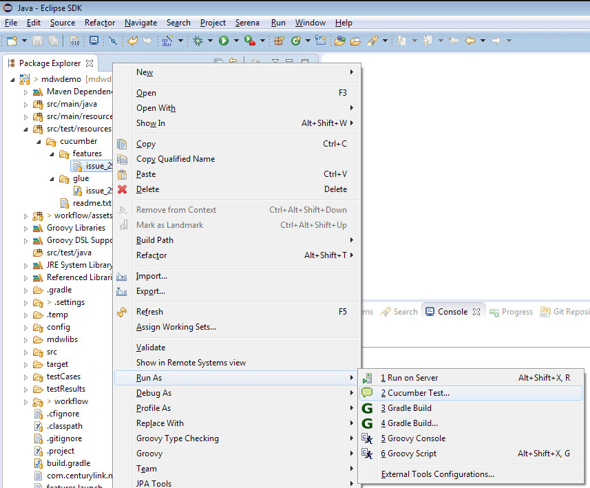
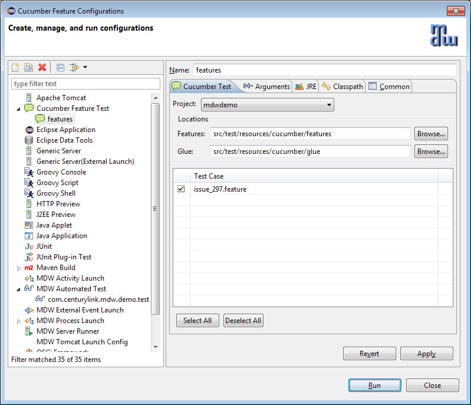

MDW Automated Tests can be written as Cucumber features using Gherkin syntax. Many projects include non-workflow capabilities that also utilize a behavior-driven approach that lends itself to Cucumber. For convenience, the MDW Eclipse plugin provides a facility to execute non-MDW Cucumber features. The screenshots below illustrate this capability.

